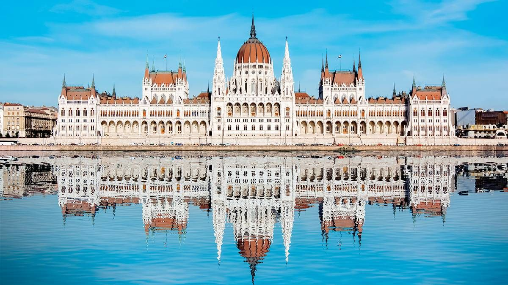

Місце народження: 30 листопада 2004 року, м.Боярка Київська обл.
Освіта: Вишнівський академічний ліцей №1, м.Вишневе Київська обл.;
Київський політехнічний інститут імені Ігоря Сікорського, м.Київ;
Хоббі:
Улюблені фільми:
Будапе́шт (угор. Budapest) — місто на Дунаї, столиця Угорщини. 1873 року міста Пешт (угор. Pest — грубка), яке лежало на східному боці річки Дунай, Буда (лат. Buda) і Обуда (угор. Obuda, обидва — на західному боці річки) було об'єднано в одне місто під назвою Будапешт.
Сучасне місто Будапешт утворено в 1873 шляхом адміністративного об'єднання міст Буда (Buda) і Пешт (Pest), розташованих на протилежних берегах Дунаю. Причому спочатку місто називали «Пешт-Буда». Зазначені ойконіми слов'янського походження і пов'язані з приходом угорців на Дунай в IX столітті. Етимологія: буда — «будинок, будова, селище» (але можливий і варіант «вода») і пішт — «пекти», в значенні «вогнище, житло»
Будапешт — головний культурний осередок Угорщини, тут розташовані головні національні театри, музеї, мистецькі заклади освіти, інші культурні заклади тощо. 1884 року за проектом Міклоша Іблі було зведено будівлю Будапештської опери. 1896 року у Будапешті було засновано центральний музей Угорщини — Музей образотворчих мистецтв. У 1802 році було засновано Національну бібліотеку імені Ференца Сечені.
